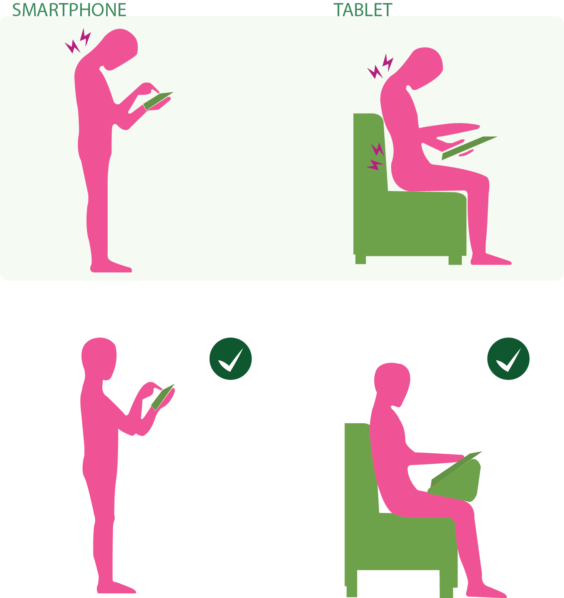

Acredito que com os estudos que tivemos até agora deu para refletir sobre a ergonomia não apenas no meio de trabalho, mas na sua rotina do dia a dia também não é? Afinal, estamos a todo tempo nos movimentando e realizando atividades que requerem alguns esforços do nosso corpo.
Hoje, com uma população cada vez mais conectada a informação virtual aumenta a utilização de dispositivos móveis, que tornam-se cada vez mais comuns por pessoas de todas as idades.
Pesquisas mostram que o número de problemas relacionados a coluna cervical aumentou cerca de 40% nos últimos anos, devido ao uso excessivo de dispositivos como celulares e tablets (OGlobo.com, 2016).
Por isso é importante ficar alerta com nossa postura ergonômica durante o tempo de manuseio de tais equipamentos.
